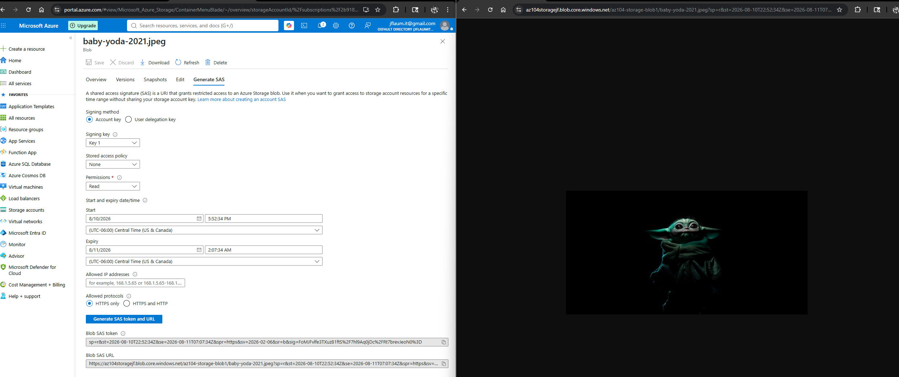
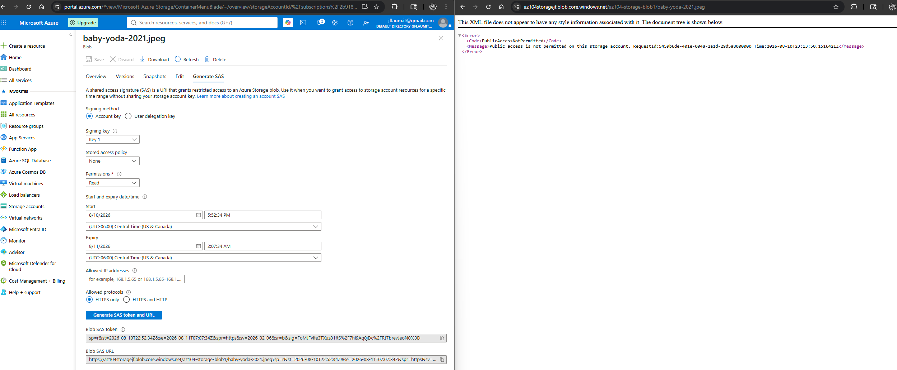
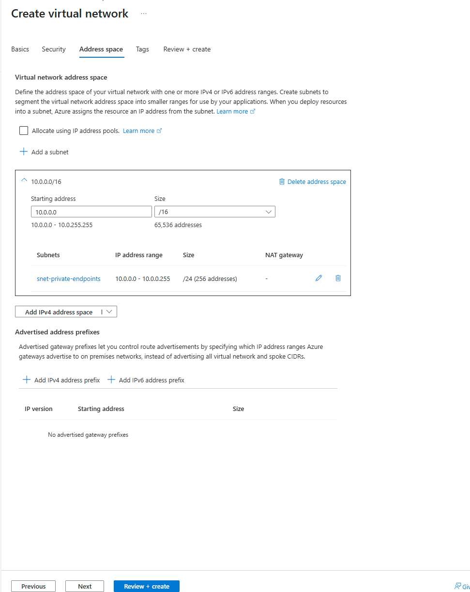
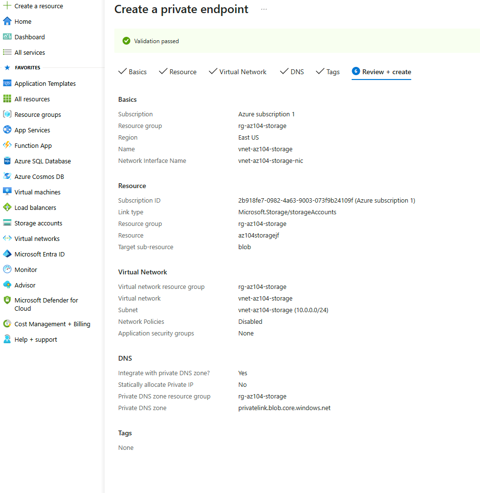
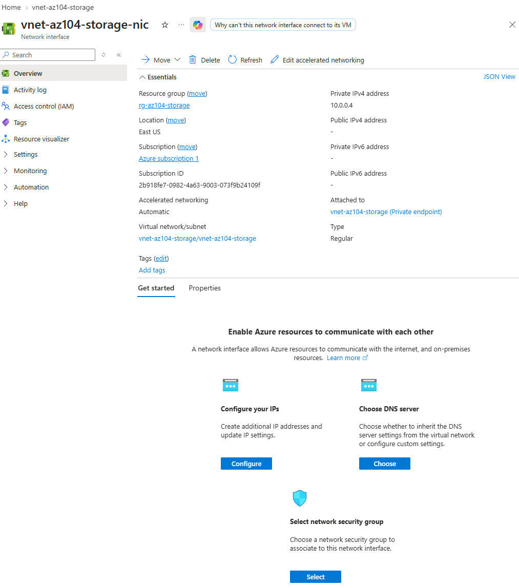

Two different ways to control access to storage that solve two different problems. A SAS token grants scoped, time-limited authorization without ever sharing the storage account key. A private endpoint removes the storage account from the public internet entirely for a given network path. Built and tested both against the same storage account from Lab 2.1.
The storage account key grants full read, write, and delete access to everything in the account, indefinitely, until manually rotated. A SAS token narrows that down to exactly one permission, on exactly one resource, for exactly one short window of time. If a SAS token leaks, the exposure is bounded: read access to one blob for a few hours. If the account key leaks, the exposure is the entire storage account, forever, until someone notices and rotates it. Scoping down to the minimum needed access is the whole reason SAS tokens exist as a separate mechanism from the key.
A firewall rule on the storage account's public endpoint still leaves the storage account reachable from the public internet, just restricted to approved source IPs. A private endpoint removes the public attack surface for that connection path entirely: traffic from the VNet travels over Microsoft's private backbone network directly to the storage service and never touches the public internet. A firewall rule answers "who is allowed in the door." A private endpoint answers "there is no public door for this path at all."
Chose "Enable private subnet (no default outbound access)" when creating snet-private-endpoints, since a private endpoint doesn't need to initiate outbound connections to the internet to function. Its job is letting resources inside the VNet reach the storage account privately, not the other way around. Leaving the subnet without default outbound access is tighter security posture for a subnet whose only purpose is hosting private endpoints, and it reinforces the same network isolation idea the private endpoint itself is built around.
Built and tested the authorization layer first, then the network isolation layer, against the same storage account.





"If you can build it again tomorrow without looking at yesterday's code, you've learned it. If you need to copy and paste it again, you've only completed a tutorial."
I am learning Infrastructure as Code deliberately, specifically Terraform and Bicep, rather than treating them as copy-paste snippets. The code below reflects actual understanding of each resource, not just reproduced boilerplate.
Same structure as Terraform: VNet, subnet, private DNS zone, and the private endpoint itself, all native ARM resource types.